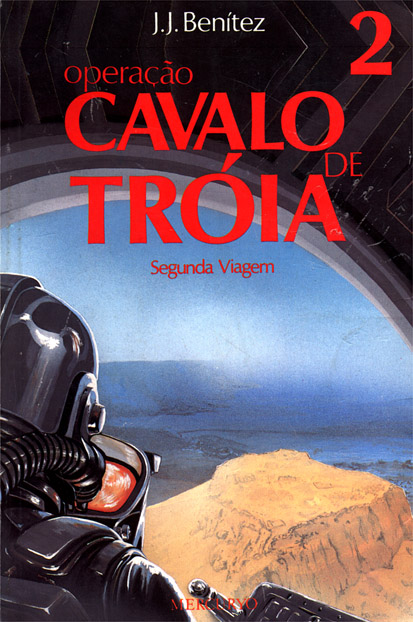

Esses são alguns títulos que recomendo para quem quer se aprofundar e descobrir um pouco mais sobre o que esta por acontecer...
Romance
ficção que conta sobre o nascimento do Anitcristo e as pessoas
em sua volta que lutam para protege-lo. Damien foi o escolhido para representar
uma das maiores e mais temidas figuras de todos os tempos, tendo a marca
da besta cravada em sua cabeça, o número 666. Esse livro
poderá abrir nossos olhos para nos mostrar que o Anticristo poderá
(ou já está) entre nós, e sem que se perceba, ele
prepara seu exército para o ia do Juízo Final.
Uma
obra impressionante pela riqueza de detalhes. Um major norte americano
da NASA confia ao autor do livro seu diario sobre uma missão secreta
batizada de Operação Cavalo de Tróia, que consiste
na criação de um módulo de transporte que os envie
ao ano 30 D.C. registando e presenciando as últimas horas, a morte
e a ressureição de Cristo. Uma visão científica
de tudo o que os evangelistas contam na Bíblia, a explicação
dos milagres, de possíveis anjos e até a presença
de alienígenas. Leiura recomandada. (obs. essa é a ilustração
do volume 2 do livro.É necessário que leiam o 1º antes.)
Página anterior
Página Inicial
Próxima Página